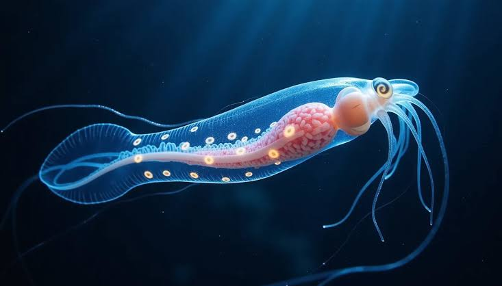
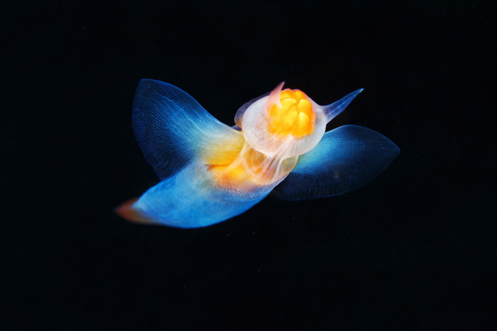

Glass Squid
The glass squid, part of the Cranchiidae family, is known for its nearly transparent body, which helps it evade predators in the open ocean. Some species have the unique ability to store ammonia in their body fluids, allowing them to maintain neutral buoyancy and drift effortlessly. Additionally, their eyes are often asymmetrical, with one significantly larger than the other, an adaptation that enhances their ability to detect light and movement in the deep sea.
Sea Angel
Sea angels are ethereal-looking creatures with glowing, gelatinous bodies, belonging to the pteropod, or winged-snail, group. Unlike their shelled relatives, they have evolved into completely shell-less, free-swimming predators that use wing-like appendages to gracefully propel themselves through the water. Despite their delicate appearance, they are efficient hunters, feeding primarily on sea butterflies by using specialized tentacle-like structures to grasp and consume their prey.
Dumbo Octopus

The Dumbo octopus has distinctive ear-like fins that allow it to propel itself gracefully through the water, resembling the famous Disney elephant it is named after. Unlike many other octopuses, it does not rely on jet propulsion but instead flaps its fins for a more energy-efficient, drifting movement. These deep-sea dwellers remain relatively small, reaching an average adult size of just 8 inches, making them one of the more petite members of the octopus family.